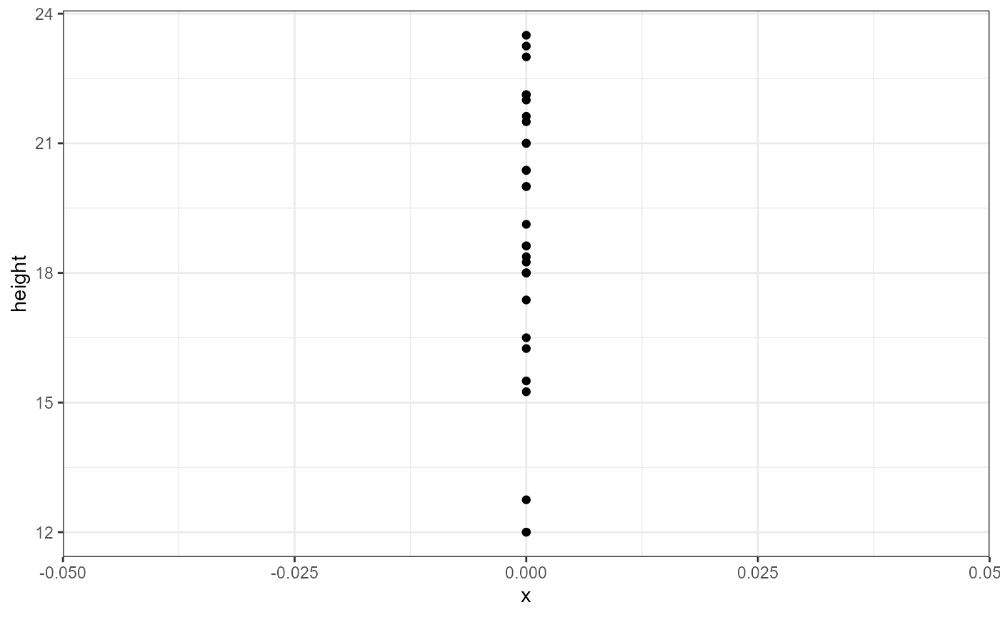
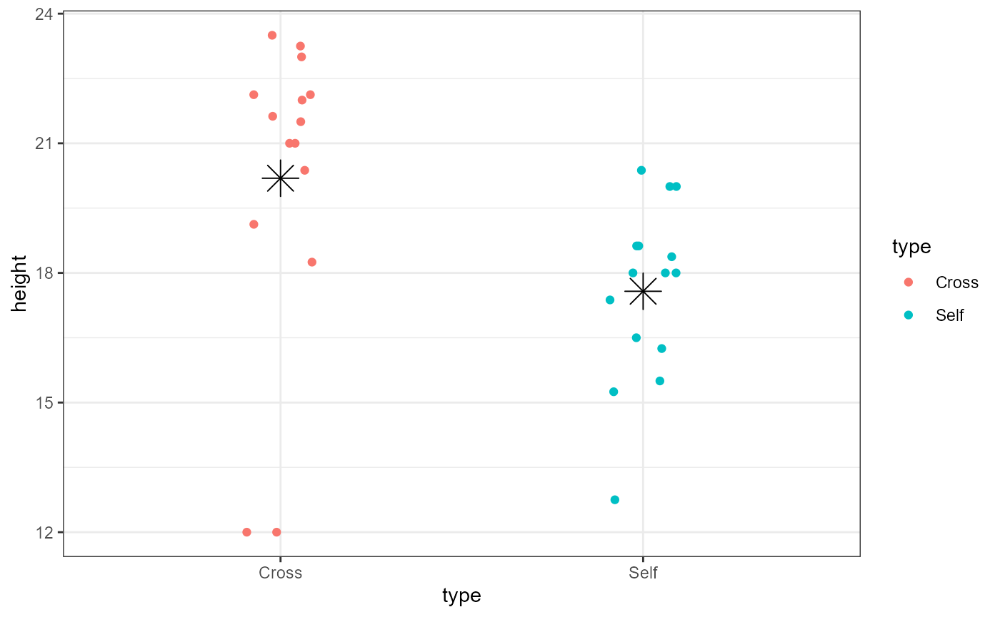
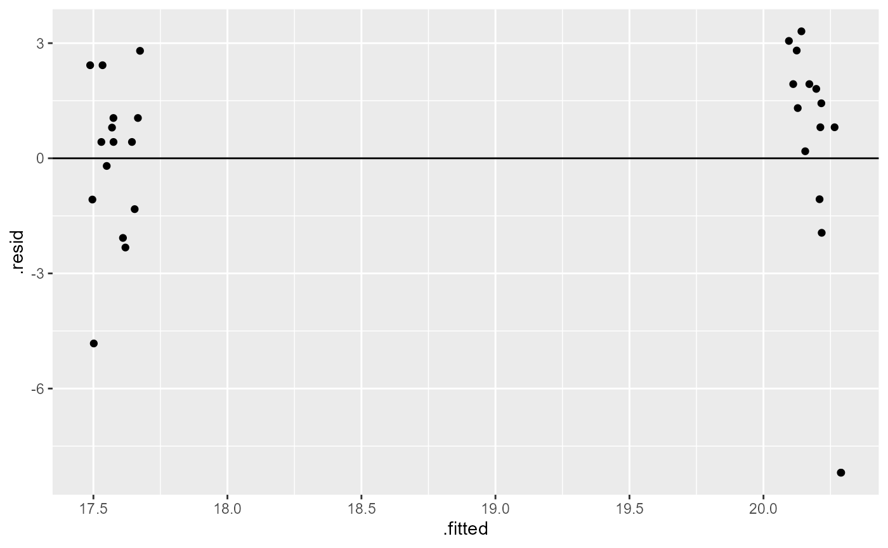

Lab 06: Linear Models
ENVS475: Experimental Analysis and Design
Spring, 2023
Source:vignettes/articles/lab_06_linear-models.Rmd
lab_06_linear-models.RmdAbout
This lab introduces the analysis of data using a linear model framework. It closely follows chapter 6 in The New Statistics With R 2nd ed. by Andy Hector.
Packages
For this lab, we will be using the dplyr,
ggplot2, and arm packages. Make sure all
packages are installed on your computer, and then run the following
code:
Data
For this lab, we will be using data from an experiment that Charles Darwin performed on the effects of self-pollination on Zea maize plants. Darwin was interested in determining if high genetic diversity also led to more healthy plants, and it is assumed that self-pollinated plants will have lower genetic diversity Briefly, Darwin was interested in whether or not there was a difference in fitness of seeds which were produced from self- or cross-pollinated plants. Here, the height of the plants was used as a surrogate for fitness.
We will be using the darwin_maize.csv data, which you
can download from D2L. Be sure to put it into your data/
folder. When we read in the data, we will assign it to the object called
darwin_maize.
darwin_maize <- read.csv("data/darwin_maize.csv")Let’s take a brief look at the data:
names(darwin_maize)## [1] "pot" "pair" "type" "height"
dim(darwin_maize)## [1] 30 4
head(darwin_maize)## pot pair type height
## 1 I 1 Cross 23.500
## 2 I 1 Self 17.375
## 3 I 2 Cross 12.000
## 4 I 2 Self 20.375
## 5 I 3 Cross 21.000
## 6 I 3 Self 20.000- This data contains 30 observations in 4 columns.
- The variables we are concerned with are the
typeandheight
- The
potandpairvariables are grouping variables which we will ignore for now but will discuss in a future lab.
You can check to see which values appear in the type
variable with the following code. Note that these return the same values
but in different formats.
distinct(darwin_maize, type) # returns data frame## type
## 1 Cross
## 2 Self
unique(darwin_maize$type) # returns a vector## [1] "Cross" "Self"Linear Models
Before, we calculated means, standard deviations, and standard error
of the means by hand or with dplyr functions
(summarise() and mutate()). Now, we are going
to adopt a linear model approach and use the lm() function
(lm stands for “linear model”).
In the most basic case, we can use the lm() to calculate
an “intercept-only” model. Essentially this is just calculating the
grand mean of our response variable within the data. Before we get into
the lm() function, let’s plot our response variable. We are
going to ignore the grouping variables, and here we will set
x = 0 to illustrate the “intercept-only” aspect:
ggplot(darwin_maize,
aes(y = height,
x = 0)) +
geom_point() +
theme_bw()
We can see there’s lots of variation in the observations (y-axis). Our estimate for the global intercept will just be the average response of these data points.
Intercept-only model with lm()
Now let’s use the lm() function to calculate a linear
model. The lm() function is a bit different from most of
the functions we’ve seen so far. Namely, the first argument it takes is
a formula, and we need to specify the object we want to
perform the model on with the data argument. Likewise, the
output it returns is a special type of list called an
lm, so we will need to store the output in a new
object.
I’m going to call this object dlm0 which stands for
“darwin linear model 0”.
dlm0 <- lm(formula = height ~ 1,
data = darwin_maize)The first argument is a formula. It has the general syntax of
response_variable ~ predictor_variable. Here, the response
we’re interested in is height. For this simple model, we
are ignoring all predictor variables and just calculating an intercept.
However, R doesn’t know how to deal with an incomplete formula, so we
put a 1 in as a place holder.
The new object we created is a list. Lists are complex data
structures which can hold many different types of data. We will get into
the specifics of these later, but for now just run the following code to
get an idea of the general structure of the lm()
output.
is.list(dlm0)## [1] TRUE
class(dlm0)## [1] "lm"
names(dlm0)## [1] "coefficients" "residuals" "effects" "rank"
## [5] "fitted.values" "assign" "qr" "df.residual"
## [9] "call" "terms" "model"Because the output is a complex data type, we will rely on a special function to summarize the output and give us the values we are interested in for now. (In the future we will be interested in other values, such as p-values, so will use different functions later.)
We will use the display() function from the
arm package. Make sure you ran the
library(arm) call at the top of this lab. If you try and
run the code below and get an error, it’s likely that the package was
not properly installed or loaded.
display(dlm0)## lm(formula = height ~ 1, data = darwin_maize)
## coef.est coef.se
## (Intercept) 18.88 0.58
## ---
## n = 30, k = 1
## residual sd = 3.18, R-Squared = 0.00This output is called a table of coefficients. There is a row for each coefficient (in this case, just the intercept) and the columns show the estimate as well as the standard error of the estimate.
Coefficient tables in R always list the first coefficient as the
intercept, and it can be sometimes tricky to figure out what it’s
actually referring to. In this case, we can confirm it’s the global
average by using the mean() function, either on it’s own or
with dplyr:
mean(darwin_maize$height)## [1] 18.88333## global_avg
## 1 18.88333The number of observations is displayed in the table of coefficients
as n, and the number of parameters estimated is shown with
k. It also shows us the \(R^2\) value, tells us how much variation is
explained based on the predictor variables used in our model. \(R^2\) values range from 1 (perfect
explanation) to 0 (no explanation). In this case we don’t have any
predictor variables, so the intercept only model explains 0% of the
variation in the response variable.
The table also shows us the residual standard deviation, which in
this case is the same as using sd() since we are ignoring
group-levels.
sd(darwin_maize$height)## [1] 3.180953Model with a categorical predictor
The intercept-only model is useful for showing what the
lm() function does but is rarely of interest in an analysis
framework. Let’s examine a slightly more complex model where we use the
type variable as a predictor.
But first, let’s plot the data separated by type.
ggplot(darwin_maize,
aes(x = type,
y = height,
color = type)) +
geom_point() +
theme_bw()We can now see that the plants which are categorized as
type == Cross may be taller than the
type == Self category. Remember that the Self
plants presumably have lower genetic diversity. This plot looks to
confirm the general hypothesis, but let’s make one small tweak to the
plot in order to show all the individual observations.
ggplot(darwin_maize,
aes(x = type,
y = height,
color = type)) +
geom_point(position = position_jitter(
width = 0.1,
height = 0)) +
theme_bw()The poisiotion_jitter() function adds a little bit of
random noise to the points so that they are note plotted right over one
another (note that there are now 2 observations in the Cross group at
the y-value of 12). In this case, we added a little noise to the x-axis
(width = 0.1). Because the y-axis is our response variable,
we did not add any noise (height = 0) to it to avoid
masking the effect of our predictor variable.
Now, let’s fit the model including the categorical predictor variable
into a new object dlm1 (darwin linear model 1).
dlm1 <- lm(height ~ 1 + type,
data = darwin_maize)Note that when you have predictor variables in the
formula the 1 is no longer needed, so running
lm(height ~ type, data = darwin_maize) will give you the
same result.
Let’s display the results of our new model:
display(dlm1)## lm(formula = height ~ 1 + type, data = darwin_maize)
## coef.est coef.se
## (Intercept) 20.19 0.76
## typeSelf -2.62 1.07
## ---
## n = 30, k = 2
## residual sd = 2.94, R-Squared = 0.18The layout of this table is similar as before, but now we have two
rows, one called “(Intercept)” and one called “typeSelf”. Recall that
there are only 2 categories in the type variable. Because
typeSelf is listed in the table, you would be correct in assuming that
(Intercept) is the average height of the plants in the Cross group.
You might also assume that the typeSelf coefficient
estimate is the avergae of the other group of plants. However, this
coefficient is showing the estimated difference in means. So in
order to get the mean for the Self group, we need to subtract the
estimated difference from the estimate for the Cross group.
\[ \bar{y}_{self} = \bar{y}_{cross} - \beta_{difference}\]
\[\bar{y}_{self} = 20.19 - 2.62 = 17.57\]

We can add estimates of the group means in ggplot to help us visualize this.
ggplot(darwin_maize,
aes(x = type,
y = height,
color = type)) +
geom_point(position = position_jitter(
width = 0.1,
height = 0)) +
stat_summary(fun = mean,
geom = "point",
color = "black",
shape = 8,
size = 6) +
theme_bw()
You should now be able to complete problem 2 in the homework assignment.
Standard error of the difference
The coefficient table above contains estimates of our coefficients as well as standard errors. The standard error for the intercept is calculated the same was the SEM we saw before in class: \(SEM = \frac{\sigma}{\sqrt n}\).
The standard error for the second term is not an SEM but a standard error of the difference between means (SED). The formula for this is:
\[\large SED = \sqrt{\frac{s^2_{1}}{n_1} + \frac{s^2_{2}}{n_2}}\]
However, the linear model doesn’t calculate the variance from each
group separately but does a more accurate “pooled” calculation. I won’t
ask you yo do this manually in class, but just know that if you used
var() on each group and tried to plug it into the formula
above you would not get exactly the same result.
The SED is always wider than the SEM of either group. This is because there is uncertainty in the estimate of each group mean (SEM), and these uncertainties are carried through the calculation of the difference between the means.
Confidence intervals of coefficients
Recall that a 95% CI is approximated by:
\[\large 95\% CI = \bar{y} \pm
2*SEM\] Similar to the SED calculation above, there is
uncertainty in our estimates, our SEM and SED’s so we cannot simply
multiply these together to estimate a 95% CI. Luckily, there is an R
function, confint() which specifically calculates
confidence intervals for coefficients from linear models. This
function does not work on vectors. It only works on fitted model
objects
confint(dlm1)## 2.5 % 97.5 %
## (Intercept) 18.63651 21.7468231
## typeSelf -4.81599 -0.4173433The output of confint() is the lower bound (2.5%) and
the upper bound (97.5%) of the confidence interval.
So the 95% confidence interval for the average height of the Cross plants is: 18.6365102, 21.7468231, and the 95% CI for the average difference between the two groups is: -4.81599, -0.4173433.
Interpretation
Recall that the hypothesis was that self-pollinating plants were less fit due to lower genetic diversity. What does our data indicate?
If there was NO EFFECT of self-pollination, we would expect the heights of each group to be the same. Or in other words, the difference between the groups would be 0. Because the 95% CI is completely negative (does not include 0), we can be fairly confident that there is a difference in plant height. Because the mean height of the Self-group of plants is lower, we can conclude the difference in height is consistent with the original hypothesis (self-pollinated plants are shorter and therefore less-fit).
The arm package has a nice function for displaying
coefficient estimates: coefplot(). This function also
requires the object to be a model fit (will not work on a vector).
I added the xlim = c(-5, 0) argument to ensure that the
plot displayed 0, which is our value of interest. When you’re doing this
on the homework, you may need to play around with different limits on
the x-axis.
So, at the 95% confidence level, we can say that the there is a decrease in mean plant height in self-pollinated plants.
We can test this same hypothesis at a higher level of confidence, i.e., 99% CI
99% CI and coefplot()
We can change the level of certainty in both the
confint() and coefplot() functions with the
following. We can calculate a 99% CI directly by adding
level = 0.99 to the confint() function.
Unfortunately, the coefplot() function only allows us to
change the level of standard deviation. We can set sd = 3
to get approximately the same values.
confint(dlm1, level = 0.99)## 0.5 % 99.5 %
## (Intercept) 18.093790 22.2895433
## typeSelf -5.583512 0.3501789
coefplot(dlm1, sd = 3)Notice that at the 99% confidence level (or at 3 * the standard deviation), the interval now crosses 0. In other words, at this more strict level of confidence, we cannot say that there is a difference in height between the two plant groups.
Assumptions
It’s always important to remember that all models have assumptions, and you should check that those assumptions are reasonably met. The 4 assumptions of a linear model are:
- Linearity
- Normality of residuals
- Equal variance (homoscedasticity) of residuals
- For categorical data, need to ensure equal variance across groups
- Independence
Assumption 1 is usually assessed graphically and will be more important when we get to regression analysis (continuous x-variables). For categorical data it is less often tested directly.
Testing assumption 4 directly is tough, so usually we assess this assumption based on our understanding of how the data were generated and observed.
For assumptions 2 and 3, even with categorical data, we can assess with graphs.
For assumption 2, normal distribution of residuals, we use a Q-Q plot
which shows our standardized residuals compared with our theoretical
quantiles. We can do this using ggplot().
NOTE the aes() function has an argument
called sample. We do not use an x or y argument.
ggplot(darwin_maize, aes(sample = height)) +
stat_qq() + # plot qq points
stat_qq_line() # reference lineIf the residuals were perfectly normal, all the points would be exactly on the line. Here, the data in the middle fit pretty well, but the observations at the extreme ends are rather far off the line. Luckily, linear models are fairly robust to this assumption. In this case, it doesn’t look perfect, but it’s not terrible. We will discuss how to deal with non-normal residuals in the future.
For assumption 3, equal variance of residuals, we can compare the
fitted model values with the residuals. For this we can again use
ggplot(), however, this time we are plotting the model
object, not the raw data directly. Note that I once again added a
“jitter” argument to the width (x-axis) to help visualize the individual
points but did not modify the position on the height (y-axis)
ggplot(dlm1,
aes(x = .fitted, y = .resid)) +
geom_point(
position = position_jitter(
width = 0.1,
height = 0)) +
geom_hline(yintercept = 0)
What we are looking for here is that the minimum and maximum y-values are the same across the x-values, and that they are approximately equally distributed above and below the reference line (y = 0).
Here, we have a few points that are well below the rest (difference in range), and it appears to be unequal (most points above the 0 reference line). Similar to the results above, this is not perfect, but also not terrible.
When we have categorical predictors, we also want to ensure that the variance between groups is approximately the same. We can do this with a boxplot of the groups.
ggplot(darwin_maize,
aes(x = height,
y = type)) +
geom_boxplot()+
labs(title = "Example of approx. equal variances across groups")Here, the widths of the boxplots are approximately equal which means that each group has approximately the same observed variation. The dots on the left side for each group are not ideal, but this doesn’t look too concerning.
What would be concerning is if the widths of the boxes were different sizes. For example:
Relevelling the groups
We can modify the data to estimate the mean and SE for the other
plant group (Self). Right now, the type column
is a character datatype.
class(darwin_maize$type)## [1] "character"The default behavior for R is to treat characters alphabetically. We
can change this by setting the class of type to a factor
and designate the levels or orders of that factor. I will first make a
new object called darwin_factor, which will be an exact
copy of darwin_maize. I will then change the class of the
type variable directly.
# copy the data object
darwin_factor <- darwin_maize
# change the class of the type column
# and set the levels
darwin_factor$type <- factor(
darwin_factor$type,
levels = c("Self", "Cross"))
# what is the class of the new type column?
class(darwin_factor$type)## [1] "factor"
# what are the order of the levels?
levels(darwin_factor$type)## [1] "Self" "Cross"Finally, we can perform the same linear model analysis as above with
the Self group as our reference level.
## lm(formula = height ~ type, data = darwin_factor)
## coef.est coef.se
## (Intercept) 17.58 0.76
## typeCross 2.62 1.07
## ---
## n = 30, k = 2
## residual sd = 2.94, R-Squared = 0.18Now we can see that the estimate and SE for the Intercept coefficient
are different. Likewise the second row of the table now says
typeCross instead of typeSelf.